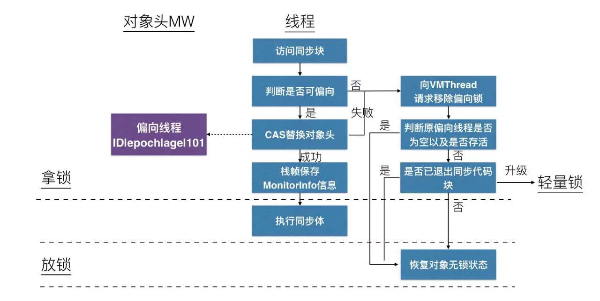

Java 并发-锁
内置锁 Synchronized
Java 提供了一种内置锁 (Intrinsic Lock)机制来支持原子性: 同步代码块 (Synchronized Block)。每个 Java 对象都可以用做一个实现同步的锁，这些锁被称为内置锁 (Instrinsic Lock) 或监视器锁 (Monitor Lock)。Java 的内置锁相当于一种互斥体(或互斥锁)，这意味着最多只有一个线程能持有这种锁。但是，加锁的含义不仅仅局限于互斥行为，还包括内存可见性，为了确保所有线程都能看到共享变量的最新值，所有执行读操作或者写操作的线程都必须在同一个锁上同步。
Java synchronized 语句 是基于 monitorenter/monitorexit 机制来实现的。当你写下面这段代码的时候:
1 2 3 4 5 6 7 8
| static void Sort(int [] array) { synchronized(array) { } }
|
实际上 JVM 可能会生成下面的代码:
1 2 3 4 5 6 7 8 9 10
| .method static Sort([I)V aload_0 monitorenter ; lock object in local variable 0 ; now sort elements in array aload_0 monitorexit ; finished with object in local variable 0 return .end method
|
monitorenter 在对象的引用上获取了一个 exclusive lock (独占锁)
内置锁 synchronized 是可重入的，某个线程试图获取一个已经由它自己持有的锁，那么这个请求就会成功。
死锁
在数据库系统的设计中考虑了监测死锁以及从死锁中恢复。在执行一个事务 (Transaction) 时可能需要获取多个锁，并一直持有这些锁直到事务提交。当数据库服务器监测到一组事务发生了死锁时 (通过在表示等待关系的有向图中搜索循环)，将 选择一个牺牲者并放弃这个事务。作为牺牲者的事务会释放它所持有的资源，从而让其它事务继续进行。应用程序可以重新执行被强行中止的事务，而这个事务现在也可以成功完成。
死锁的四大必要条件 (必须全部满足):
- 互斥
- 持有并等待资源
- 不可抢占
- 循环等待
如果所有的线程以固定的顺序来获得锁，那么在程序中就不会出现锁顺序死锁问题:
1 2 3 4 5 6 7 8 9 10 11 12 13 14 15 16 17 18 19 20 21
| public class LeftRightDeadlock { private final Object left = new Object(); private final Object right = new Object(); public void leftRight() { synchronized (left) { synchronized (right) { doSomething(); } } } public void rightLeft() { synchronized (right) { synchronized (left) { doSomethingElse(); } } } }
|
有时候，你并不能清除地知道是否在锁顺序上有足够的控制权来避免死锁的发生:
1 2 3 4 5 6 7 8 9 10 11 12 13 14 15 16 17
| public void transferMoney(Account fromAccount, Account toAccount, DollarAmount amount) throws InsufficientFundsException { synchronized (fromAccount) { synchronized (toAccount) { if (fromAccount.getBalance().compareTo(amount) < 0) throw new InsufficientFundsException(); else { fromAccount.debit(amount); toAccount.credit(amount); } } } }
|
在这里锁的顺序取决于参数顺序，而这些参数顺序又取决于外部输入，考虑下面代码就有可能发生死锁:
1 2
| A: transferMoney(myAccount, yourAccount, 10); B: transferMoney(yourAccount, myAccount, 20);
|
使用 System.identityHashCode 来定义锁的顺序:
1 2 3 4 5 6 7 8 9 10 11 12 13 14 15 16 17 18 19 20 21 22 23 24 25 26 27 28 29 30 31 32 33 34 35 36 37 38 39 40 41 42 43 44 45 46 47 48
| private static final Object tieLock = new Object(); public void transferMoney(final Account fromAcct, final Account toAcct, final DollarAmount amount) throws InsufficientFundsException { class Helper { public void transfer() throws InsufficientFundsException { if (fromAcct.getBalance().compareTo(amount) < 0) throw new InsufficientFundsException(); else { fromAcct.debit(amount); toAcct.credit(amount); } } } int fromHash = System.identityHashCode(fromAcct); int toHash = System.identityHashCode(toAcct); if (fromHash < toHash) { synchronized (fromAcct) { synchronized (toAcct) { new Helper().transfer(); } } } else if (fromHash > toHash) { synchronized (toAcct) { synchronized (fromAcct) { new Helper().transfer(); } } } else { synchronized (tieLock) { synchronized (fromAcct) { synchronized (toAcct) { new Helper().transfer(); } } } } }
|
某些获取多个锁的操作并不像 LeftRightDeadLock 或 transferMoney 中那么明显，这两个锁并不一定必须在同一个方法中被获取:
1 2 3 4 5 6 7 8 9 10 11 12 13 14 15 16 17 18 19 20 21 22 23 24 25 26 27 28 29 30 31 32 33 34 35 36 37 38 39
| class Taxi { @GuardedBy("this") private Point location, destination; private final Dispatcher dispatcher; public Taxi(Dispatcher dispatcher) { this.dispatcher = dispatcher; } public synchronized Point getLocation() { return location; } public synchronized void setLocation(Point location) { this.location = location; if (location.equals(destination)) dispatcher.notifyAvailable(this); } } class Dispatcher { @GuardedBy("this") private final Set<Taxi> taxis; @GuardedBy("this") private final Set<Taxi> availableTaxis; public Dispatcher() { taxis = new HashSet<Taxi>(); availableTaxis = new HashSet<Taxi>(); } public synchronized void notifyAvailable(Taxi taxi) { availableTaxis.add(taxi); } public synchronized Image getImage() { Image image = new Image(); for (Taxi t : taxis) image.drawMarker(t.getLocation()); return image; } }
|
通过将上述代码修改为开放调用 (调用某个方法时不需要使用锁)，从而消除发生死锁的风险:
1 2 3 4 5 6 7 8 9 10 11 12 13 14 15 16 17 18 19 20 21 22 23 24 25 26 27 28 29 30 31 32 33 34 35 36 37 38
| @ThreadSafe class Taxi { @GuardedBy("this") private Point location, destination; private final Dispatcher dispatcher; ... public synchronized Point getLocation() { return location; } public synchronized void setLocation(Point location) { boolean reachedDestination; synchronized (this) { this.location = location; reachedDestination = location.equals(destination); } if (reachedDestination) dispatcher.notifyAvailable(this); } } @ThreadSafe class Dispatcher { @GuardedBy("this") private final Set<Taxi> taxis; @GuardedBy("this") private final Set<Taxi> availableTaxis; ... public synchronized void notifyAvailable(Taxi taxi) { availableTaxis.add(taxi); } public Image getImage() { Set<Taxi> copy; synchronized (this) { copy = new HashSet<Taxi>(taxis); } Image image = new Image(); for (Taxi t : copy) image.drawMarker(t.getLocation()); return image; } }
|
在程序中应该尽量使用开放调用。与那些在持有锁时调用外部方法的程序相比，更易于对依赖于开放调用的程序进行死锁分析。通过使用定时锁能够有效地应对死锁问题，通过 Thread Dump 能够帮助你识别死锁的发生。
减少锁的竞争
有三种方式可以降低锁的竞争程度:
- 减少锁的持有时间
- 降低锁的请求频率
- 使用带有协调机制的独占锁，这些机制允许更高的并发性
重入锁 ReentrantLock
ReentrantLock 的 tryLock 方法为你提供了轮询锁与定时锁的锁获取模式，与无条件的锁获取模式相比，它具有更完善的错误恢复机制。方法 lockInterruptibly 方法能够在获得锁的同时保持对中断的响应。ReentrantLock 的构造函数中提供了两种公平性选择: 创建一个非公平的锁 (默认) 或者一个公平的锁。在公平的锁上，线程将按照它们发出请求的顺序来获得锁，但在非公平的锁上，则允许“插队”。在大多数情况下，非公平锁的性能要高于公平锁的性能。
1 2 3 4 5 6 7 8 9 10 11 12 13 14 15 16 17 18 19
| public class ReentrantLock implements Lock, java.io.Serializable { private final Sync sync; abstract static class Sync extends AbstractQueuedSynchronizer { } public ReentrantLock(boolean fair) { sync = fair ? new FairSync() : new NonfairSync(); } public boolean tryLock() { return sync.nonfairTryAcquire(1); } public void unlock() { sync.release(1); } }
|
读写锁 ReadWriteLock
1 2 3 4 5 6 7 8 9 10
| public class ReentrantReadWriteLock implements ReadWriteLock, java.io.Serializable { public ReentrantReadWriteLock(boolean fair) { sync = fair ? new FairSync() : new NonfairSync(); readerLock = new ReadLock(this); writerLock = new WriteLock(this); } }
|
记录锁 Record Locking
Record Locking 更好的叫法应该被称为: byte-range locking，目的是为了防止两个进程同时修改一个文件的某块区域。函数原型如下:
1 2 3
| #include <fcntl.h> int fcntl(int fd, int cmd, ... );
|
其中 flock 结构体定义如下:
1 2 3 4 5 6 7
| struct flock { short l_type; short l_whence; off_t l_start; off_t l_len; pid_t l_pid; };
|
F_RDLCK: 共享读锁F_WRLCK: 排斥写锁F_UNLCK: 取消某个区域的锁
锁优化
自旋锁 SpinLock
互斥同步对性能最大的影响就是阻塞的实现，挂起线程和恢复线程的操作都需要转入内核态中完成，这些操作给系统的并发性能带来了很大的压力。同时，虚拟机的开发团队也注意到在许多应用上，共享数据的锁定状态只会持续很短的一段时间，为了这段时间去挂起和恢复线程并不值得。为了能让线程稍微等一会，我们只需让线程执行一个忙循环 (自旋)，这项技术就是所谓的自旋锁。
现在我们假设硬件上有一种能够保证原子性的 TestAndSet 指令实现函数:
1 2 3 4 5
| int TestAndSet(int *x){ register int temp = *x; *x = 1; return temp; }
|
TestAndSet 是一种常用的用于支持并发的原子操作指令。另外一种经常使用的指令是原子 Exchange 操作:
1 2 3 4 5
| void Exchange(int *a, int *b) { int temp = *a; *a = *b; *b = temp; }
|
这些所有的原子性操作中最重要的是 CompareAndSwap (CAS) 操作，它经常被用于 lock-free and wait-free algorithms 算法中。
1 2 3 4 5 6 7 8
| boolean CAS(int *a, int old, int new) { int temp = *a; if (temp == old) { *a = new; return true; } else return false; }
|
使用 CAS 来实现 temp++:
1 2 3 4
| int temp = x; while (!CAS(&x, temp, temp+1)) { temp = x; }
|
使用 CAS 来实现更链表头插法:
1 2 3 4 5 6
| while (1) { Node *q = *head; p->next = q; if (CAS(head, q, p)) break; }
|
一般而言，SpinLock 是一种抽象的数据类型，其通常提供三种操作:
1 2 3
| Lock(mutex); Si; UnLock(mutex);
|
实现 SpinLock 的伪代码如下:
1 2 3 4 5 6 7 8 9 10 11 12 13 14
| typedef int SpinLock; void InitLock(SpinLock *L) { *L = 0; } void Lock(SpinLock *L) { while (TestAndSet(L)) ; } void UnLock(SpinLock *L) { *L = 0; }
|
一种使用 Exchange 操作的可能实现:
1 2 3 4 5 6 7 8 9 10 11 12 13
| typedef int SpinLock; void InitLock(SpinLock *s) { *s = 0; } void Lock (SpinLock *s) { int L = 1; do { Exchange(&L, s); } while (L == 1); } void UnLock (SpinLock *s) { *s = 0; }
|
另外一种使用 CompareAndSwap 指令的实现:
1 2 3 4 5 6 7 8 9 10 11
| typedef int SpinLock; void InitLock(SpinLock *s) { *s = 0; } void Lock (SpinLock *s) { do { } until (CompareAndSwap(s, 0, 1)); } void UnLock (SpinLock *s) { *s = 0; }
|
自旋锁最大的问题就是可能会占用比较高的 memory bus 带宽，另外它也不保证公平性，即无法保证先后进入临界区的两个进程 P 和 Q 按照 FIFO 顺序来服务。
锁消除 Lock Elimination
虚拟机 JIT 在运行时，对一些代码要求同步，但是被检测到不可能存在共享数据竞争的锁进行消除。主要判定依据来自于逃逸分析的数据支持。
锁粗化 Lock Coarsening
轻量级锁 Lightweight Locking
偏向锁 Biased Locking
偏向锁的”偏”，是偏心的”偏”，它的意思就是这个锁会偏向于第一个获得它的线程，如果在接下来的执行过程中，该锁没有被其他的线程获取，则持有偏向锁的线程将永远不需要再进行同步。当有另外一个线程去尝试获取这个锁时，偏向模式就宣告结束。
JDK 1.6 默认开启 -XX:+UseBiasedLocking，使用 -XX:-UseBiasedLocking 来关闭。
偏向锁转为轻量级锁的流程图:

锁升级 Lock Escalation
所谓的锁升级（lock escalation），是数据库的一种作用机制，该机制普遍见于各大数据库产品。 为了节约内存的开销，其会将为数众多并占用大量资源的细粒度的锁转化为数量较少的且占用相对较少资源的粗粒度的锁，多数情况下主要指将为数众多的行锁升级为一个表锁。当然，DB2 支持很多粒度的锁，如表空间（table space），表（table），行（row）以及索引（index）等。MySQL 的 InnoDB 存储引擎支持事务，默认是行锁。得益于这些特性，数据库支持高并发。
锁升级与两种事情有关:
常用的索引有三类：主键、唯一索引、普通索引。主键 不由分说，自带最高效的索引属性；唯一索引 指的是该属性值重复率为0，一般可作为业务主键，例如学号；普通索引 与前者不同的是，属性值的重复率大于0，不能作为唯一指定条件，例如学生姓名。当“值重复率”低时，甚至接近主键或者唯一索引的效果，“普通索引”依然是行锁；当“值重复率”高时，MySQL 不会把这个“普通索引”当做索引，即造成了一个没有索引的 SQL，此时引发表锁。索引不是越多越好，索引存在一个和这个表相关的文件里，占用硬盘空间，宁缺勿滥，每个表都有主键（id），操作能使用主键尽量使用主键。同 JVM 自动优化 java 代码一样，MySQL 也具有自动优化 SQL 的功能。低效的索引将被忽略，这也就倒逼开发者使用正确且高效的索引。
参考